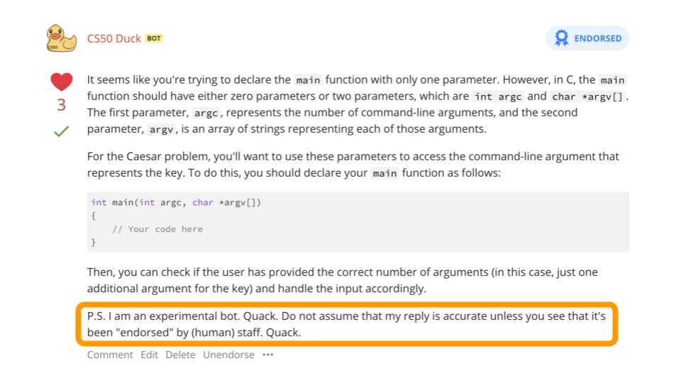

人工智能
- 欢迎!
- Image Generation
- ChatGPT
- Prompt Generation
- CS50.ai
- Generative AI
- Decision Trees
- Minimax
- 机器学习
- Deep Learning
- Generative 人工智能
- Summing Up
欢迎!
- In 计算机科学 and 编程 circles, rubber ducking or rubber duck debugging is the act of speaking to an inanimate object to be able to talk through a challenging problem.
- Most recently, CS50 created our own rubber duck debugger at cs50.ai, which uses 人工智能 as a way by which to interact with students to help them with their own challenging problems.
- Students engaging with this 工具 can begin understanding the potential of what AI can offer the 世界.
Image Generation
- Numerous AI 工具 have created the potential for artificially generated images to enter the 世界.
- Up until recently, most of these 工具 had numerous tells that might indicate to an observer that an image is AI-generated.
- However, 工具 are becoming exceedingly good at generating these images.
- Indeed, as technology improves, it will soon be almost, if not entirely, impossible for such images to be detected with the naked eye.
- Software has also gained the ability to mutate individual images within 视频.
ChatGPT
- A very well-known bleeding-edge 工具 is the text generation 工具 chatGPT.
- In CS50, we do not allow the use of ChatGPT. However, we do allow the use of our own rubber duck debugger at cs50.ai.
- In CS50, we leverage the 工具 of Azure and OpenAI, along with our own vector database that holds very recent information from our most recent 讲座 and offerings, to provide our rubber duck debugger toll.
Prompt Generation
- Prompt generation is the way by which an individual can communicate with an AI platform.
- We use a system prompt to teach the AI how to interact with users. We teach the AI how to work with students.
- User prompts are those provided by users to interact with the AI. With these prompts, students interact with the AI.
CS50.ai
- Our rubber duck debugger can provide conceptual help with 计算机科学 concepts.
- Further, the rubber duck debugger can help students write 更多 efficient code.
- Additionally, the rubber duck debugger can help when a student is stuck in one of their 作业. For 示例, students 五月 encounter errors that prevent them from progressing in their 作业. When students hit a wall, they don’t have to wait for support 工作人员 to be available.
-
The rubber duck debugger does stipulate, however, that it is an AI and that it is experimental. Students should be conscious of the degree to which they blindly trust the AI. Consider the following image:

- AI has an inhuman level of patience.
Generative AI
- AI has been with us for much 时间! Software has long adapted to users. 算法 look for patterns in junk mail, images saved on your phone, and to play games.
- In games, for 示例, step-by-step instructions 五月 allow a computerized adversary play a game of Breakout.
Decision Trees
- Decision trees are used by an algorithm to decide what decision to make.
-
For 示例, in Breakout, an algorithm 五月 consider what choice to make based on the instructions in the code:
While game is ongoing: If ball is left of paddle: Move paddle left Else if ball is right of padding: Move paddle right Else: Don't move paddle - With most games, they attempt to minimize the number of calculations 必需 to compete with the player.
Minimax
- You can imagine where an algorithm 五月 score outcomes as positive, negative, and neutral.
- In tic-tac-toe, the AI 五月 consider a board where the computer wins as
1and one where the computer loses as-1. - You can imagine how a computer 五月 look at a decision tree of potential outcomes and assign scores to each potential move.
- The computer will attempt to win by maximizing its own score.
-
In the context of tic-tac-toe, the algorithm 五月 conceptualize this as follows:
If player is X: For each possible move: Calculate score for board Choose move with highest score Else if player is O: For each possible move: Calculate score for board Choose move with lowest score -
This could be pictured as follows:

- Because computers are so powerful, they can crunch massive potential outcomes. However, the computers in our pockets or on our desks 五月 not be able to calculate trillions of options. This is where 机器学习 can help.
机器学习
- 机器学习 is a way by which a computer can learn through reinforcement.
- A computer can learn how to flip a pancake.
- A computer can learn how to play Mario.
- A computer can learn how to play The Floor is Lava.
- The computer repeats trial after trial after trial to discover what behaviors to repeat and those not to repeat.
- Within much of AI-based 算法, there are concepts of explore vs. exploit, where the AI 五月 randomly try something that 五月 not be considered optimal. Randomness can yield better outcomes.
Deep Learning
- Deep learning uses neural networks whereby problems and solutions are explored.
-
For 示例, deep learning 五月 attempt to predict whether a blue or red dot will appear somewhere on a graph. Consider the following image:

- Existing training data is used to predict an outcome. Further, 更多 training data 五月 be created by the AI to discover further patterns.
-
Deep learning creates nodes (pictured below), which associate inputs and outputs.

Generative 人工智能
- Large language models are massive models that make predictions based on huge amounts of training.
- Just a few years ago, AI was not very good at completing and generating sentences.
- The AI encodes words into embeddings to find relationships between words. Thus, through a huge amount of training, a massive neural network can predict the association between words - resulting in the ability for generative AI to generate content and even have conversations with users.
- These technologies are what is behind our rubber duck debugger.
Summing Up
In this lesson, you learned 关于 some of the technology behind our own rubber duck debugger. Specifically, we discussed…
- Image Generation
- ChatGPT
- Prompt Generation
- CS50.ai
- Generative AI
- Decision Trees
- Minimax
- 机器学习
- Deep Learning
- Generative 人工智能
This was CS50!